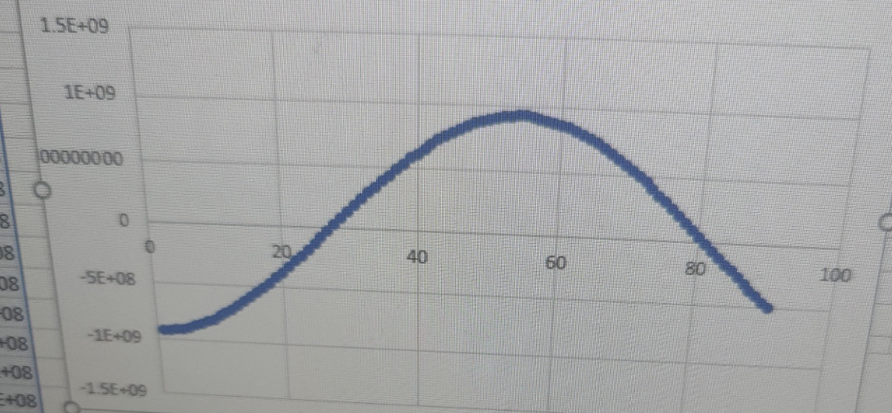
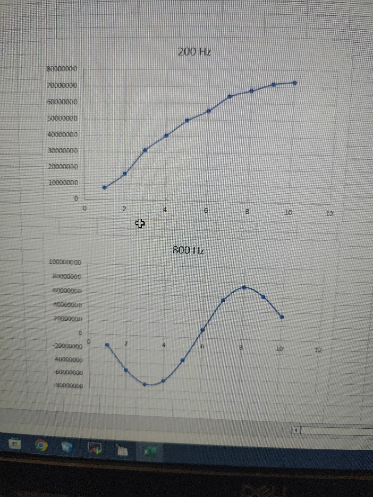

Dancing Boids
ECE 5760 Final Project
By Amy Wang, Minjung Kwon, and Ryan Chan.
Demonstration Video
Project Introduction
Dancing Boids visualizes music using the boid (bird-oid object) flocking simulation, where the flocks of boids spread apart or group up based on the frequencies of the music.
Going into more detail, this system is implemented on the DE1-SoC Board which includes both an FPGA and an ARM-based HPS processor that can run C code. This system consists of three main components. This first is an audio component that takes audio input from the audio jack and extracts the highest-amplitude frequency. This was implemented on the FPGA side as it was both simple and efficient to approach this using several FIR filters in RTL design. The second piece is a calculation component that takes this frequency and performs boid flocking calculations based on it. This was implemented on the HPS side as it was difficult to efficiently parallelize multiple boids with each boid interacting with each other in RTL design. The third and final piece is a display component that takes the boid calculations and displays them to the VGA screen. This was implemented on the FPGA side as we found in previous assignments that it was significantly faster than displaying using the HPS.
High Level Design
Rationale and Sources for Idea
We chose to pursue this project because we enjoyed the boid project from ECE 4760 and wanted to expand upon it and see new applications to which it can be applied. Members of our team also had previous experience working with audio visualization from ECE 5725 which would be helpful for this project. Finally, we all enjoyed music and simply thought it would be cool to see what flocks of boids reacting to music would look like.
Background Math
Some background information on the math used in this project would be helpful before going into more detail. We initially used a Fast Fourier Transform (FFT) in our baseline design to obtain the highest amplitude frequency from the input audio signal with very high resolution. However, implementing an FFT on the FPGA side is very difficult, and high resolution is not required for music visualization. Therefore, we instead chose to use Finite Input Response (FIR) bandpass filters to give us a coarse approximation of the highest amplitude frequency. To do this, we created five FIR bandpass filters, with each filter covering a specific frequency range. More specifically, we had a filter for each of these ranges: 200 Hz to 550 Hz, 550 Hz to 900 Hz, 900 Hz to 1250 Hz, 1250 Hz to 1600 Hz, and 1600 to 2000 Hz. When an audio signal with frequencies between 200 Hz to 2000 Hz is inputted, the five bandpass filters will output the filtered amplitudes for each of their ranges. We can then choose the filter with the highest amplitude to find a rough approximation of the highest amplitude frequency. For example, if a 700 Hz signal is put into the FIR filters, the bandpass filter set to 550 Hz to 900 Hz will have the highest amplitude, so we can conclude that the signal is between 550-900 Hz and we can estimate it as 725 Hz (the middle of 550 and 900):
The algorithm we used to create the visualization was the boid flocking algorithm, which mimics the flocking behavior of birds and other flocking animals. In this algorithm, each boid object has a visual range of all the other boids they can see. Within this visual range is a protected range where the boids will steer away from other boids in the range to avoid a collision. The amount that they avoid each other can be tuned with a parameter called the avoid factor. This is calculated by taking the sum of the difference of the boid of interest with every other boid in the protected range and multiplying it by the avoid factor. The result is then added to the boid of interest’s velocity.
Image credit: ECE 4760 Boid Webpage
In addition to avoiding collisions with boids within the protected range, the boids will attempt to match their velocities with other boids within their visual range. This causes the boids to align with each other, and the amount that they align can be tuned with a parameter called the matching factor. This is calculated by first finding the average velocity of all the other boids within the visual range of the boid of interest. The boid of interest’s velocity is then subtracted from this average velocity and multiplied by the matching factor. The result is then added to the boid of interest’s total velocity.
Finally, the boids will move toward the center of mass of the boids within its protected range, causing them to form cohesive groups. The amount that they group together can be tuned with a parameter called the centering factor. This is calculated by first finding the average position of all the other boids within the visual range of the boid of interest. The boid of interest’s position is then subtracted from this average position and multiplied by the centering factor. The result is then added to the boid of interest’s total velocity.

More information on the Boids algorithm can be found on this page
Logical Structure and Tradeoffs
At a high level, our system first receives audio input from the audio jack which is read and stored on the FPGA side. This is then fed into five FIR bandpass filters implemented combinationally. This allows it to be calculated very quickly but comes with the tradeoff of using many of the limited number of multipliers available.
The output of these five filters is then sent over five Qsys busses over to the HPS side, which will pick the filter range with the highest amplitude to approximate the highest amplitude frequency as described above. This frequency is then used to adjust the avoid, matching, and centering factors for the boids in such a way that higher frequencies cause the boids to group up, and lower frequencies cause the boids to break apart. The boid’s new positions are then calculated on the HPS side based on these factors. Although this is not as computationally efficient as parallelizing it on the FPGA side, we determined that there were not enough multipliers to effectively implement the boid calculations on the FPGA side. Additionally, it was significantly easier and less bug-prone to implement it on the HPS side.
Finally, rendering instructions for the boids are sent over the Qsys bus back to the FPGA side to be displayed using the VGA SRAM.
Patents, Trademarks, Copyrights
We did not reverse-engineer or use any patented, trademarked, or copyrighted designs and we did not sign a non-disclosure to get a sample part. We could patent or publish the project, but we prefer to keep it Open-Source in case anyone else would like to use it.
Program and Hardware Design
Baseline Design
Our baseline design involved using the FPGA to create a simple audio loop-back configuration. Audio from our laptops were sent into the MIC audio jack on the SoC and out to a speaker with no processing involved. We used the Audio loop-back configuration example provided on the Audio Digital Signal Processing (DSP) webpage and made no significant changes to the Verilog code at this stage.
We added a PIO port, allowing for the FPGA to communicate with the ARM HPS, and sent the audio data through the port. Thus, we were able to process our audio solely in C on the HPS. In order to determine the frequency of the audio played, we chose to use fast fourier transform (FFT) to process our audio as FFT is often used to determine the frequencies of the different sine waves that make up a periodic function. Specifically, we used the Cooley-Tukey Fast Fourier Transform method. The Cooley-Tukey FFT first splits the discrete fourier transforms (DFTs) into smaller DFTs. The algorithm then divides the length of each summation. This recursive algorithm takes advantage of the divisiveness of the sums (DFTs) and reduces computation time significantly. Our audio sampling rate was set to 48kHz and we used the FFT code provided by Professor Hunter Adams for his class ECE 4760. After using FFT to find the max frequency, we mapped the frequency to the centering and avoidance factor of the boids to allow the audio to control the boids’ movements.
The boids were controlled solely by the ARM HPS, in terms of both drawing them on the VGA screen and updating each boid’s parameters (velocity, speed, position, etc.). The code for spawning and updating the boids were sampled from ECE 4760 as all three teammates had taken the course before and have written the code in past semesters. For this project, we were less rigorous with the frame rate at which the boids showed up on the VGA screen. We simply tested with different numbers (in the hundreds) of boids and confirmed visually which total number of boids responded best to the input audio.
Alternative Design
To improve our baseline, we accelerated the VGA display aspect and audio processing aspect of our design by re-configuring the FPGA.
We saw in lab 2 of this course that the FPGA can display images on the VGA screen much faster than the ARM HPS. Therefore, we re-used our GPU finite state machine design in lab 2 for this project. Similar to lab 2, we re-wrote Qsys in order to use a dual-port SRAM for the VGA buffer. Using the SRAM also allowed us to overcome the low write-rate of the SDRAM-buffered VGA. The dual-ports allowed for the HPS to control the boids (by still using C to do all the necessary calculations) and for only the FPGA to write to the VGA SRAM. How the HPS and FPGA communicated and how a pixel is written to the VGA memory is as follow: the FPGA checks if the HPS has sent a command, if yes then that means the HPS has written to the Qsys SRAM and so the FPGA will read from different memory addresses of the Qsys SRAM to gather different data. Specifically, the HPS writes to the Qsys SRAM information about a boid’s position and color, the FPGA will read these data, and then the FPGA will write these data to the VGA SRAM.
We had many issues with this step of the project, as changing the Qsys layout also affected our Audio loopback configuration. Thus, before moving on to accelerate audio processing, we spent time debugging the combination of these two (display and audio) configurations. In the end, our system was built by starting with the display configuration then adding the audio system. We also added another PIO port to allow for the buttons on the SoC board to control the mode of the boid display. While button 0 was used as the reset button that resets the entire program, button 1 set the mode value to 0 (box boundary), button 2 set the mode value to 1 (column boundary), and button 3 set the mode value to 2 (no boundaries/ wraparound). This resulted in better user-experience and a much smoother transition between the 3 modes.
Box boundary for boids (mode = 0). Set when button 1 is pressed
Column boundary for boids (mode = 1). Set when button 2 is pressed
Wraparound boundary for boids (mode = 2). Set when button 3 is pressed
We accelerated the audio processing step by configuring 5 Finite Impulse Response (FIR) bandpass filters in RTL rather than using FFT on the HPS. This allowed audio to be filtered before being sent to the ARM HPS. We chose to use filters instead of recreating an FFT in RTL simply due to the time constraints of this project. We used Python, specifically the scipy library to calculate the weights for the FIR filters. The FIR filters we used incorporated the window method, where the taps (number of audio sample data) of each filter is multiplied by a coefficient/weight and then all products from one filter are summed up. This sum is seen as the amplitude result of the filter. The bandpass filter that contained the audio frequency would result in the highest amplitude. The weight was determined by the scipy function firwin. Each weight was converted manually to a fixed point before copied into our Verilog code. This is because we created a Verilog multiply module that uses the hardware multipliers in order to account for overflow and underflow. We tested different number of taps in python to determine the lowest amount needed for all 5 filters to work correctly. To avoid needing hundreds and thousands of taps and to take advantage of our project not needing a precise frequency, we lowered the sampling rate to 8k Hz and were able to determine 21 taps per filter sufficient. We also created an array of shifting registers to collect and consistently update the sampled audio data.
We used combinational logic to calculate the result from the filters so that all 5 filters could be computed simultaneously, accelerating the audio processing step. The amplitude outputs of the filters were sent via PIO ports from the FPGA to the HPS and we then used C to determine the maximum amplitude, thus determining the frequency range of our audio input. We averaged the frequency of the correct frequency range and mapped that frequency to the centering and avoidance factor of the boids, thus allowing the audio to control the boids’ movements.
Other Design Attemps
Originally, we planned on accelerating the boids calculations as well, but we were unable to do so for the following reasons:
1. Accelerating the entire boids calculations would require more s than available. Our filters are already using 105 multipliers (21 taps for each of the 5 bins). Each boid requires at least 10 multipliers and if we want to display hundreds of boids we would exceed the 174 multipliers limit.
2. Accelerating the part of the boids calculations that accounts for each boid looking at every other boid would require extensive communication between the ARM HPS and the FPGA. We have 300 boids right now so that means for each boid, we would need to pass in 300+ variables via the pio ports. We believe this would create too much overhead and ultimately slow down our program.
Design and Testing Methods
To design the Dancing Robot audio visualizer, we approached the project with five milestones: implementation of boids in HPS, audio input with FFT in HPS, FIR in FPGA, optimization, and user interface. Each implementation started with a simple setup and tests. This developmental design and testing method allowed us to ensure the performance of our design.
Boids Design and Testing
The boids design and algorithm were based on the given guide from ECE4760. The boids algorithm allows for the replication of animal movement in groups, such as swarming, flocking, and schooling. In the algorithm, each animal is represented as a boid and controlled with three rules: separation, alignment, and cohesion. These rules allow each boid to stay away from others with the avoiding factor, match the velocity of others, and move toward the center of the mass of other boids based on the centering factor. Based on the code written by Minjung and Amy from ECE4760 that used RP2040, the code was modified to be used on DE1-SoC. A communication bus between the FPGA and HPS was built and boids were spawned with VGA functions.
In the design, the 12.15 fixed point was used to complete the arithmetic with fractional resolution. The top bit of 27 bits is used for the sign. Fixed-point arithmetic allows us to calculate with fractional resolution while using the same CPU cycles as the integer arithmetic and removes overflow and underflow for multiplication. It is implemented in a signed multiplier by selecting the 12 bits from the 41st to 30th bits and 15 bits from the 29th to 15th bits for the multiplied output of two 27-bit values. Also, the bits in integers were shifted by 15 to set the decimal between the bits 12 and 15. There exists a tradeoff as we get faster computation with a smaller range for resolution. However, it is important to use the fixed point as it saves more CPU cycles than using the floating point and handles overflow or error. This also minimizes the delay for updated the boid information and drawing at the correct timing.
To test the basic functionality of boids algorithms, 20 boids are drawn with no boundary, controlling factors, or bias applied and were tested with a VGA screen. The VGA successfully drew the stationary boids as small circles; however, we faced several issues where the boids were lagging, moving diagonally, and appearing in a random position in the VGA screen when they move out of the screen. We were able to find several reasons for these issues. First, the screen was not cleaned or not drawing black in the right position when boids were moving which made them look lagging. Second, the frame rate was too high which made computation too complex. Third, the numerical variables were not casted correctly with fixed point notation which made the fractional values to be zero and caused calculation errors.
When testing the boids drawing, we attempted different parameter values and methods to enhance the visuality. After modification in VGA_disc and the addition of motion controls, we found good parameter values of VGA functions and control factors that make the boids look and move more naturally.
Audio FFT Design and Testing
To take audio input, the audio module FIFO was implemented. The state machines were also added to real the stereo from the audio FIFO. With the audio input, we implemented the FFT in HPS, using the guide provided in ECE4760. The Cooly-Tukey FFT algorithm is described above.
To test the functionality of FFT of audio input, we used a tone generator and serial output to see the filtered data. When we plotted the output of FFT while running the same tone generator, we experienced that the filtered output was discrete, showing the step function when plotted. The issue was found to be the sampling rate. It was sampling the FPGA too fast so it was getting the same value before the update. After the change, we could see the sine wave in the plot. We also confirmed that the FFT calculation output from audio sampling matches the frequency of the tone generator.
Audio FIR Implementation and Testing
After the FFT implementation, we decided to use FIR in FPGA instead of FFT to increase the calculation speed using FPGA. There exist advantages of using FFT such as a higher resolution and simple implementation in HPS. However, for better efficiency and performance in boids motions, we implemented FIR to utilize FPGA hardware. Also, a high resolution was not needed for us, considering the project scope. Designing the boids to react to small changes in frequency was unnecessary and expensive in computation and risky in terms of possible errors. Also, FIR works better on FPGA and gives a similar output as FFT, as we computed chunks of frequency.
The testing was also done with a tone generator and serial monitor output. During the test, we experience the noise in the FIR filter. After a long debug, it was found that the high volume of the audio from a laptop was the source of the noise. Testing with the volume level of 2 in Macbook, the output did not show any noise both numerically and visually with boids.
Also, to check the reactivity of the boids in a change of frequency visually, we turned on various types of music from classics to pop songs. Looking at the motions on VGA, we lowered some changes in the number of boids to increase the speed of the boids. Also, the avoiding factor and centering factor were carefully chosen to demonstrate the reactivity effectively while maintaining the swarming behaviors.
Optimization Design and Testing
In addition to fixed-point arithmetics and FIR filters, we also tried to optimize the boids calculation so that we could increase the number of boids to swarm. We attempted to incorporate FPGA in the entire boids calculations. However, this would require more multiplier than available. 105 multipliers were already in use for the FIR computation as there are 21 taps for each of the five bins. Each boid required at least 10 multipliers and there were hundreds of boids. This would exceed the 174 multipliers limit in FPGA. Additionally, this acceleration method would require extensive communication between FPGA and ARM HPS. With 300 boids, PIO ports would have to pass 300+ variables which could create too much overhead and ultimately slow down the program. After careful consideration and testing on the VGA screen, we decided not to modify the boids calculations.
User Interface Design and Testing
We designed the user interface that allows the user can change boundary conditions to see different swarming motions of boids and background color. We also decided to use a projector, instead of a VGA monitor. Implementation of the VGA projector went smoothly as we used the VGA screen before. We changed the settings like brightness, color contrast, and each RGB rate in the projector to make the boids more visible. Tested on different lighting, angle, and walls. We first used the project in the dark lab environment and could see the boids with different colors on the black background. When we tested in Duffield Atrium in the evening, the boids were not very visible even though the lighting was not bright. We had to maximize the brightness on the projector and find a better wall without lamps near. When we tested in the morning in Duffield, we found that the red background made the white boids visible the best after testing with black and blue background colors.
Result
Figure1: Output of Audio FFT graph
The graph shows the output of the FFT of audio input. The form of a sine wave shows the functionality of FFT in HPS is demonstrated.
Figure2: Output of Audio FIR graph
The graphs show the outputs of the FFT of audio input of different frequency values. The form of a sine wave shows the functionality of FIR in FPGA is demonstrated.
Videos
Dancing Boids with Classical Music
The video shows the outputs of the audio visualizer with a black background. The video was taken in the Phillips lab with classical music. The interactiveness of boids is demonstrated by the slow change in pitch and speed of the music.
Dancing Boids with Pop Music
The video shows the outputs of the audio visualizer with a black background. The video was taken in the Duffield Atrium with pop music. The interactiveness of boids is demonstrated with a strong bass and fast change in pitch.
Conclusion
The project successfully used audio to control and manipulate the movement of boids. During the implementation, we had several challenges involving transitioning parts of the program from software to hardware. In hardware, the audio processing algorithm was simplified (from FFT to 5 FIR filters) to accelerate the calculation. The sampling rate was reduced as well to simplify the filter algorithm.
In the future, we would like to optimize the project by accelerating it more on the FPGA. Instead of using the GPU state machine, we could take advantage of the M10K blocks to display the boids on the VGA screen. Additionally, we could also increase the sampling rate, increase the number of filters, and decrease the frequency range of the filters to get a more accurate and precise frequency result from our input audio.
There are no intellectual property considerations for this project.
Appendix A
The group approves this report for inclusion on the course website.
The group approves the video for inclusion on the course youtube channel.
Work Distribution
Project group picture
***It is difficult to separate and distribute the work contributions. For the entirety of this project, all three members of the group worked closely together on all aspects of the project. We often scheduled times to go to the lab together to collaborately write and debug our code.
Amy
yw575@cornell.edu
Minjung
mk2592@cornell.edu
Ryan
rc627@cornell.edu
Parts List
- DE1-SoC - Provided in lab
- VGA projector - Provided in lab
- LEDs, Resistors and Wires - Provided in lab
- PoP voice Upgraded Lavalier Lapel Microphone - $10.99
Total: $10.99
References
Boids AlgorithmGPU with FAST display from SRAM
Audio output bus_master
Cooley-Tukey FFT
DE1-SoC
FIR filter
Appendix B (C Code)
//////////////////////////////////////////
/// Final C code for 5760 Dancing Boids///
//////////////////////////////////////////
#include
#include
#include
#include
#include
#include
#include
#include
#include
#include
#include
#include "address_map_arm_brl4.h"
/* function prototypes */
void VGA_text (int, int, char *);
void VGA_text_clear();
void VGA_box (int, int, int, int, short);
void VGA_line(int, int, int, int, short) ;
void VGA_disc (int, int, int, short);
// define colors
#define WHITE 0xff
#define BLACK 0x00
#define BLUE 0b00011111
#define RED 0b11100000
#define GREEN 0b00011100
#define PURPLE 0b11100011
#define YELLOW 0b11111101
//PIO ports
volatile unsigned int * right_audio = NULL;
volatile unsigned int * left_audio = NULL;
volatile unsigned int * debug1 = NULL;
volatile unsigned int * debug2 = NULL;
volatile unsigned int * debug3 = NULL;
volatile unsigned int * freq1 = NULL;
volatile unsigned int * freq2 = NULL;
volatile unsigned int * freq3 = NULL;
volatile unsigned int * freq4 = NULL;
volatile unsigned int * freq5 = NULL;
//PIO ports base address offsets
#define RIGHT_AUDIO_OFFSET 0x10
#define DEBUG1_OFFSET 0x20
#define DEBUG2_OFFSET 0x30
#define DEBUG3_OFFSET 0x40
#define FREQ1_OFFSET 0x50
#define FREQ2_OFFSET 0x60
#define FREQ3_OFFSET 0x70
#define FREQ4_OFFSET 0x80
#define FREQ5_OFFSET 0x90
// the light weight buss base
void *h2p_lw_virtual_base;
// RAM FPGA command buffer
volatile unsigned int * sram_ptr = NULL ;
void *sram_virtual_base;
// pixel buffer
volatile unsigned int * vga_pixel_ptr = NULL ;
void *vga_pixel_virtual_base;
// character buffer
volatile unsigned int * vga_char_ptr = NULL ;
void *vga_char_virtual_base;
// /dev/mem file id
int fd;
//=======================================================
// pixel macro
// !!!PACKED VGA MEMORY!!!
// The lines are contenated with no padding
#define VGA_PIXEL(x,y,color) do{\
char *pixel_ptr ;\
pixel_ptr = (char *)vga_pixel_ptr + ((y)*640) + (x) ;\
*(char *)pixel_ptr = (color);\
} while(0)
//========================================================
// swap macro
#define SWAP(X,Y) do{int temp=X; X=Y; Y=temp;}while(0)
//========================================================
// === the fixed point macros ========================================
typedef signed int fix15 ;
#define multfix15(a,b) ((fix15)((((signed long long)(a))*((signed long long)(b)))>>15))
#define float2fix15(a) ((fix15)((a)*32768.0))
#define fix2float15(a) ((float)(a)/32768.0)
#define absfix15(a) abs(a)
#define int2fix15(a) ((fix15)(a << 15))
#define fix2int15(a) ((int)(a >> 15))
#define char2fix15(a) (fix15)(((fix15)(a)) << 15)
#define divfix(a,b) (fix15)( (((signed long long)(a)) << 15) / (b))
// global variable for pixel boundaries
int leftBound;
int rightBound;
int topBound;
int bottomBound;
//mode of boid boundaries
int mode = 0; // 0 for box, 1 for column, 2 for wraparound
//define boundary hit
#define hitBottom(b) (b>int2fix15(bottomBound))
#define hitTop(b) (bint2fix15(rightBound))
// uS per frame
#define FRAME_RATE 33000
//define boid quantity conditions
#define numBoids 300
int half_numBoids = numBoids / 2;
int numBoids_cutoff = numBoids / 5;
// the color of the boid
char color = 0xff ;
// boid parameters
fix15 turnfactor = float2fix15(0.2);
fix15 visualRange = int2fix15(40);
fix15 visualRange_sq = multfix15(int2fix15(40),int2fix15(40));
fix15 protectedRange = int2fix15(8);
fix15 protectedRange_sq = multfix15(int2fix15(8),int2fix15(8));
fix15 centeringfactor = float2fix15(0.0005);
fix15 avoidfactor = float2fix15(0.05);
fix15 matchingfactor = float2fix15(0.05);
fix15 maxspeed = int2fix15(6);
fix15 minspeed = int2fix15(3);
fix15 maxbias = float2fix15(0.01);
fix15 bias_increment = float2fix15(0.00004);
fix15 biasval = float2fix15(1.0) ; // default value (user-changeable, or updated dynamically)
static char framerate_text[40];
//struct for boids
struct boids{
fix15 x;
fix15 y;
fix15 vx;
fix15 vy;
int direction;
}boids_t;
//array of boids
struct boids boidArray[numBoids];
// measure time
struct timeval t1, t2, start_time, end_time;
double elapsedTime;
struct timespec delay_time ;
//////////////////////////////////////////
/// Function to create a single boid ///
//////////////////////////////////////////
void spawnBoid(fix15* x, fix15* y, fix15* vx, fix15* vy, int direction)
{
// Start in center of screen
int random = rand() % 4 + 3;
*x = int2fix15(rand() % 441 + 100) ;
*y = int2fix15(rand() % 281+ 100) ;
// Choose left or right
if (direction) *vx = int2fix15(random) ;
else *vx = int2fix15(-random) ;
// Moving down
*vy = int2fix15(random) ;
}
/////////////////////////////////////////////////////
/// Function to map frequencies to boid parameters///
/////////////////////////////////////////////////////
float map(float x, float in_min, float in_max, float out_min, float out_max)
{
return (x - in_min) * (out_max - out_min) / (in_max - in_min) + out_min;
}
/////////////////////////////////////////////////////
/// Function to update the conditions of each boid///
/////////////////////////////////////////////////////
void update_one_boid( fix15* x, fix15* y, fix15* vx, fix15* vy, int idx) {
// For every boid . . .
// Zero all accumulator variables (can't do this in one line in C)
fix15 xpos_avg = 0;
fix15 ypos_avg = 0;
fix15 xvel_avg = 0;
fix15 yvel_avg = 0;
fix15 neighboring_boids = 0;
fix15 close_dx = 0;
fix15 close_dy = 0;
// For every other boid in the flock . . .
int i;
for (i=0; i 0) {
xpos_avg = divfix(xpos_avg, neighboring_boids);
ypos_avg = divfix(ypos_avg, neighboring_boids);
xvel_avg = divfix(xvel_avg, neighboring_boids);
yvel_avg = divfix(yvel_avg, neighboring_boids);
*vx = *vx + multfix15((xpos_avg -(*x)),centeringfactor) + multfix15((xvel_avg -(*vx)),matchingfactor);
*vy = *vy + multfix15((ypos_avg -(*y)),centeringfactor) + multfix15((yvel_avg -(*vy)),matchingfactor);
}
*vx = *vx + multfix15(close_dx, avoidfactor);
*vy = *vy + multfix15(close_dy, avoidfactor);
// If the boid is near an edge, make it turn by turnfactor
if (hitTop(*y) && mode==0) {
*vy = (*vy + turnfactor) ;
}
if (hitBottom(*y) && mode==0) {
*vy = (*vy - turnfactor) ;
}
if (hitRight(*x) && mode!=2) {
*vx = (*vx - turnfactor) ;
}
if (hitLeft(*x) && mode!=2) {
*vx = (*vx + turnfactor) ;
}
// Connecting the left and right walls, top and bottom walls
if (*x<=int2fix15(0) && mode==2) {
*x = int2fix15(639);
}
if (*x>=int2fix15(640) && mode==2) {
*x = int2fix15(1) ;
}
if (*y<=int2fix15(0) && mode!=0) {
*y = int2fix15(479);
}
if (*y>=int2fix15(480) && mode!=0) {
*y = int2fix15(1);
}
// Calculate the boid's speed
float float_speed = sqrt(fix2float15(*vx) * fix2float15(*vx) + fix2float15(*vy) * fix2float15(*vy)) ;
fix15 speed = float2fix15(float_speed);
fix15 vx_div_speed = divfix(*vx, speed);
fix15 vy_div_speed = divfix(*vy, speed);
// Enforce min and max speeds
if (speed < minspeed) {
*vx = multfix15(vx_div_speed, minspeed) ;
*vy = multfix15(vy_div_speed, minspeed) ;
}
else if (speed > maxspeed) {
*vx = multfix15(vx_div_speed, maxspeed) ;
*vy = multfix15(vy_div_speed, maxspeed) ;
}
// Update boid's position
*x = *x + *vx ;
*y = *y + *vy ;
}
//////////////////////////////////////////
/// Function to draw boid boundary (box)//
//////////////////////////////////////////
void drawBox() {
topBound = 100 ;
bottomBound = 380 ;
leftBound = 100 ;
rightBound = 540 ;
VGA_line(leftBound, topBound, leftBound, bottomBound, WHITE) ;
VGA_line(rightBound, topBound, rightBound, bottomBound, WHITE) ;
VGA_line(leftBound, topBound, rightBound, topBound, WHITE) ;
VGA_line(leftBound, bottomBound, rightBound, bottomBound, WHITE) ;
}
/////////////////////////////////////////////
/// Function to draw boid boundary (column)//
/////////////////////////////////////////////
void drawColumn() {
leftBound = 250 ;
rightBound = 390 ;
VGA_line(leftBound, 0, leftBound, 500, WHITE) ;
VGA_line(rightBound, 0, rightBound, 500, WHITE) ;
}
// Max and min macros
#define max(a,b) ((a>b)?a:b)
#define min(a,b) ((a bin2){
max12 = bin1;
max_freq12 = 350.;
}else{
max12 = bin2;
max_freq12 = 750.;
}
//compare bin 3 and 4
if (bin3 > bin4){
max34 = bin3;
max_freq34 = 1050.;
}else{
max34 = bin4;
max_freq34 = 1400.;
}
//compare result from 12 and 34
if (max12 > max34){
max_amp = max12;
max_freq = max_freq12;
}else{
max_amp = max34;
max_freq = max_freq34;
}
//compare to bin5
if (bin5 > max_amp){
max_amp = bin5;
max_freq = 1800.;
}
//map max frequency to boid parameters
float float_centering_factor = map(max_freq,350,1800,0.0005, 0.2);
centeringfactor = float2fix15(float_centering_factor);
float float_avoid_factor = map(max_freq,1800,350,0.0005, 0.2);
avoidfactor = float2fix15(float_avoid_factor);
//update each boid in boid array
for(c = 0; c< numBoids; c++){
// erase boid
VGA_disc(fix2int15(boidArray[c].x), fix2int15(boidArray[c].y), 2, BLACK);
// update boid's position and velocity
update_one_boid(&(boidArray[c].x), &(boidArray[c].y), &(boidArray[c].vx), &(boidArray[c].vy), c);
// draw the boid at its new position, with different colors
if (c >=0 && c < numBoids_cutoff){ //0-79
VGA_disc(fix2int15(boidArray[c].x), fix2int15(boidArray[c].y), 2, RED);
}
else if (c >=numBoids_cutoff && c < (numBoids_cutoff << 1)) {
VGA_disc(fix2int15(boidArray[c].x), fix2int15(boidArray[c].y), 2, YELLOW);
}
else if (c >=(numBoids_cutoff << 1) && c < (numBoids_cutoff * 3)){
VGA_disc(fix2int15(boidArray[c].x), fix2int15(boidArray[c].y), 2, GREEN);
}
else if (c >=(numBoids_cutoff * 3) && c < (numBoids_cutoff << 2)){
VGA_disc(fix2int15(boidArray[c].x), fix2int15(boidArray[c].y), 2, BLUE);
}
else {
VGA_disc(fix2int15(boidArray[c].x), fix2int15(boidArray[c].y), 2, PURPLE);
}
}//end of for loop
//change boid boundaries based on mode value
if (mode != (*debug1)){
VGA_line(leftBound, topBound, leftBound, bottomBound, BLACK) ;
VGA_line(rightBound, topBound, rightBound, bottomBound, BLACK) ;
VGA_line(leftBound, topBound, rightBound, topBound, BLACK) ;
VGA_line(leftBound, bottomBound, rightBound, bottomBound, BLACK) ;
VGA_line(leftBound, 0, leftBound, 500, BLACK) ;
VGA_line(rightBound, 0, rightBound, 500, BLACK) ;
mode = *debug1;
}
if (mode == 0){
drawBox();
} else if (mode == 1){
drawColumn();
} else {
topBound = 0 ;
bottomBound = 0 ;
leftBound = 0;
rightBound = 0 ;
}
} //end while
} // end main
/****************************************************************************************
* Subroutine to send a string of text to the VGA monitor
****************************************************************************************/
void VGA_text(int x, int y, char * text_ptr)
{
volatile char * character_buffer = (char *) vga_char_ptr ; // VGA character buffer
int offset;
/* assume that the text string fits on one line */
offset = (y << 7) + x;
while ( *(text_ptr) )
{
// write to the character buffer
*(character_buffer + offset) = *(text_ptr);
++text_ptr;
++offset;
}
}
/****************************************************************************************
* Subroutine to clear text to the VGA monitor
****************************************************************************************/
void VGA_text_clear()
{
volatile char * character_buffer = (char *) vga_char_ptr ; // VGA character buffer
int offset, x, y;
for (x=0; x<79; x++){
for (y=0; y<59; y++){
/* assume that the text string fits on one line */
offset = (y << 7) + x;
// write to the character buffer
*(character_buffer + offset) = ' ';
}
}
}
/****************************************************************************************
* Draw a filled rectangle on the VGA monitor
****************************************************************************************/
#define SWAP(X,Y) do{int temp=X; X=Y; Y=temp;}while(0)
void VGA_box(int x1, int y1, int x2, int y2, short pixel_color)
{
char *pixel_ptr ;
int row, col;
/* check and fix box coordinates to be valid */
if (x1>639) x1 = 639;
if (y1>479) y1 = 479;
if (x2>639) x2 = 639;
if (y2>479) y2 = 479;
if (x1<0) x1 = 0;
if (y1<0) y1 = 0;
if (x2<0) x2 = 0;
if (y2<0) y2 = 0;
if (x1>x2) SWAP(x1,x2);
if (y1>y2) SWAP(y1,y2);
for (row = y1; row <= y2; row++)
for (col = x1; col <= x2; ++col)
{
//640x480
VGA_PIXEL(col, row, pixel_color);
}
}
/****************************************************************************************
* Draw a filled circle on the VGA monitor using GPU FSM
****************************************************************************************/
void VGA_disc(int x, int y, int r, short pixel_color)
{
char *pixel_ptr ;
int row, col, rsqr, xc, yc;
rsqr = r*r;
for (yc = -r; yc <= r; yc++)
for (xc = -r; xc <= r; xc++)
{
col = xc;
row = yc;
// add the r to make the edge smoother
if(col*col+row*row <= rsqr+r){
col += x; // add the center point
row += y; // add the center point
//check for valid 640x480
if (col>639) col = 639;
if (row>479) row = 479;
if (col<0) col = 0;
if (row<0) row = 0;
// set up scratch pad parameters
*(sram_ptr+1) = col-0.5;
*(sram_ptr+2) = row-0.5;
*(sram_ptr+3) = col;
*(sram_ptr+4) = row;
*(sram_ptr+5) = pixel_color;
*(sram_ptr) = 1; // the "data-ready" flag
// wait for FPGA to zero the "data_ready" flag
while (*(sram_ptr)>0) ;
}
}
}
// =============================================
// === Draw a line
// =============================================
//plot a line
//at x1,y1 to x2,y2 with color
//Code is from David Rodgers,
//"Procedural Elements of Computer Graphics",1985
void VGA_line(int x1, int y1, int x2, int y2, short c) {
int e;
signed int dx,dy,j, temp;
signed int s1,s2, xchange;
signed int x,y;
char *pixel_ptr ;
/* check and fix line coordinates to be valid */
if (x1>639) x1 = 639;
if (y1>479) y1 = 479;
if (x2>639) x2 = 639;
if (y2>479) y2 = 479;
if (x1<0) x1 = 0;
if (y1<0) y1 = 0;
if (x2<0) x2 = 0;
if (y2<0) y2 = 0;
x = x1;
y = y1;
//take absolute value
if (x2 < x1) {
dx = x1 - x2;
s1 = -1;
}
else if (x2 == x1) {
dx = 0;
s1 = 0;
}
else {
dx = x2 - x1;
s1 = 1;
}
if (y2 < y1) {
dy = y1 - y2;
s2 = -1;
}
else if (y2 == y1) {
dy = 0;
s2 = 0;
}
else {
dy = y2 - y1;
s2 = 1;
}
xchange = 0;
if (dy>dx) {
temp = dx;
dx = dy;
dy = temp;
xchange = 1;
}
e = ((int)dy<<1) - dx;
for (j=0; j<=dx; j++) {
//video_pt(x,y,c); //640x480
VGA_PIXEL(x, y, c);
//pixel_ptr = (char *)vga_pixel_ptr + (y<<10)+ x;
// set pixel color
//*(char *)pixel_ptr = c;
if (e>=0) {
if (xchange==1) x = x + s1;
else y = y + s2;
e = e - ((int)dx<<1);
}
if (xchange==1) y = y + s2;
else x = x + s1;
e = e + ((int)dy<<1);
}
}
/// /// /////////////////////////////////////
/// end /////////////////////////////////////
Appendix C (Verilog Code)
////////////////////////////////////////////////
/// Final Verilog code for 5760 Dancing Boids///
////////////////////////////////////////////////
module DE1_SoC_Computer (
////////////////////////////////////
// FPGA Pins
////////////////////////////////////
// Clock pins
CLOCK_50,
CLOCK2_50,
CLOCK3_50,
CLOCK4_50,
// ADC
ADC_CS_N,
ADC_DIN,
ADC_DOUT,
ADC_SCLK,
// Audio
AUD_ADCDAT,
AUD_ADCLRCK,
AUD_BCLK,
AUD_DACDAT,
AUD_DACLRCK,
AUD_XCK,
// SDRAM
DRAM_ADDR,
DRAM_BA,
DRAM_CAS_N,
DRAM_CKE,
DRAM_CLK,
DRAM_CS_N,
DRAM_DQ,
DRAM_LDQM,
DRAM_RAS_N,
DRAM_UDQM,
DRAM_WE_N,
// I2C Bus for Configuration of the Audio and Video-In Chips
FPGA_I2C_SCLK,
FPGA_I2C_SDAT,
// 40-Pin Headers
GPIO_0,
GPIO_1,
// Seven Segment Displays
HEX0,
HEX1,
HEX2,
HEX3,
HEX4,
HEX5,
// IR
IRDA_RXD,
IRDA_TXD,
// Pushbuttons
KEY,
// LEDs
LEDR,
// PS2 Ports
PS2_CLK,
PS2_DAT,
PS2_CLK2,
PS2_DAT2,
// Slider Switches
SW,
// Video-In
TD_CLK27,
TD_DATA,
TD_HS,
TD_RESET_N,
TD_VS,
// VGA
VGA_B,
VGA_BLANK_N,
VGA_CLK,
VGA_G,
VGA_HS,
VGA_R,
VGA_SYNC_N,
VGA_VS,
////////////////////////////////////
// HPS Pins
////////////////////////////////////
// DDR3 SDRAM
HPS_DDR3_ADDR,
HPS_DDR3_BA,
HPS_DDR3_CAS_N,
HPS_DDR3_CKE,
HPS_DDR3_CK_N,
HPS_DDR3_CK_P,
HPS_DDR3_CS_N,
HPS_DDR3_DM,
HPS_DDR3_DQ,
HPS_DDR3_DQS_N,
HPS_DDR3_DQS_P,
HPS_DDR3_ODT,
HPS_DDR3_RAS_N,
HPS_DDR3_RESET_N,
HPS_DDR3_RZQ,
HPS_DDR3_WE_N,
// Ethernet
HPS_ENET_GTX_CLK,
HPS_ENET_INT_N,
HPS_ENET_MDC,
HPS_ENET_MDIO,
HPS_ENET_RX_CLK,
HPS_ENET_RX_DATA,
HPS_ENET_RX_DV,
HPS_ENET_TX_DATA,
HPS_ENET_TX_EN,
// Flash
HPS_FLASH_DATA,
HPS_FLASH_DCLK,
HPS_FLASH_NCSO,
// Accelerometer
HPS_GSENSOR_INT,
// General Purpose I/O
HPS_GPIO,
// I2C
HPS_I2C_CONTROL,
HPS_I2C1_SCLK,
HPS_I2C1_SDAT,
HPS_I2C2_SCLK,
HPS_I2C2_SDAT,
// Pushbutton
HPS_KEY,
// LED
HPS_LED,
// SD Card
HPS_SD_CLK,
HPS_SD_CMD,
HPS_SD_DATA,
// SPI
HPS_SPIM_CLK,
HPS_SPIM_MISO,
HPS_SPIM_MOSI,
HPS_SPIM_SS,
// UART
HPS_UART_RX,
HPS_UART_TX,
// USB
HPS_CONV_USB_N,
HPS_USB_CLKOUT,
HPS_USB_DATA,
HPS_USB_DIR,
HPS_USB_NXT,
HPS_USB_STP
);
//=======================================================
// PARAMETER declarations
//=======================================================
//=======================================================
// PORT declarations
//=======================================================
////////////////////////////////////
// FPGA Pins
////////////////////////////////////
// Clock pins
input CLOCK_50;
input CLOCK2_50;
input CLOCK3_50;
input CLOCK4_50;
// ADC
inout ADC_CS_N;
output ADC_DIN;
input ADC_DOUT;
output ADC_SCLK;
// Audio
input AUD_ADCDAT;
inout AUD_ADCLRCK;
inout AUD_BCLK;
output AUD_DACDAT;
inout AUD_DACLRCK;
output AUD_XCK;
// SDRAM
output [12: 0] DRAM_ADDR;
output [ 1: 0] DRAM_BA;
output DRAM_CAS_N;
output DRAM_CKE;
output DRAM_CLK;
output DRAM_CS_N;
inout [15: 0] DRAM_DQ;
output DRAM_LDQM;
output DRAM_RAS_N;
output DRAM_UDQM;
output DRAM_WE_N;
// I2C Bus for Configuration of the Audio and Video-In Chips
output FPGA_I2C_SCLK;
inout FPGA_I2C_SDAT;
// 40-pin headers
inout [35: 0] GPIO_0;
inout [35: 0] GPIO_1;
// Seven Segment Displays
output [ 6: 0] HEX0;
output [ 6: 0] HEX1;
output [ 6: 0] HEX2;
output [ 6: 0] HEX3;
output [ 6: 0] HEX4;
output [ 6: 0] HEX5;
// IR
input IRDA_RXD;
output IRDA_TXD;
// Pushbuttons
input [ 3: 0] KEY;
// LEDs
output [ 9: 0] LEDR;
// PS2 Ports
inout PS2_CLK;
inout PS2_DAT;
inout PS2_CLK2;
inout PS2_DAT2;
// Slider Switches
input [ 9: 0] SW;
// Video-In
input TD_CLK27;
input [ 7: 0] TD_DATA;
input TD_HS;
output TD_RESET_N;
input TD_VS;
// VGA
output [ 7: 0] VGA_B;
output VGA_BLANK_N;
output VGA_CLK;
output [ 7: 0] VGA_G;
output VGA_HS;
output [ 7: 0] VGA_R;
output VGA_SYNC_N;
output VGA_VS;
////////////////////////////////////
// HPS Pins
////////////////////////////////////
// DDR3 SDRAM
output [14: 0] HPS_DDR3_ADDR;
output [ 2: 0] HPS_DDR3_BA;
output HPS_DDR3_CAS_N;
output HPS_DDR3_CKE;
output HPS_DDR3_CK_N;
output HPS_DDR3_CK_P;
output HPS_DDR3_CS_N;
output [ 3: 0] HPS_DDR3_DM;
inout [31: 0] HPS_DDR3_DQ;
inout [ 3: 0] HPS_DDR3_DQS_N;
inout [ 3: 0] HPS_DDR3_DQS_P;
output HPS_DDR3_ODT;
output HPS_DDR3_RAS_N;
output HPS_DDR3_RESET_N;
input HPS_DDR3_RZQ;
output HPS_DDR3_WE_N;
// Ethernet
output HPS_ENET_GTX_CLK;
inout HPS_ENET_INT_N;
output HPS_ENET_MDC;
inout HPS_ENET_MDIO;
input HPS_ENET_RX_CLK;
input [ 3: 0] HPS_ENET_RX_DATA;
input HPS_ENET_RX_DV;
output [ 3: 0] HPS_ENET_TX_DATA;
output HPS_ENET_TX_EN;
// Flash
inout [ 3: 0] HPS_FLASH_DATA;
output HPS_FLASH_DCLK;
output HPS_FLASH_NCSO;
// Accelerometer
inout HPS_GSENSOR_INT;
// General Purpose I/O
inout [ 1: 0] HPS_GPIO;
// I2C
inout HPS_I2C_CONTROL;
inout HPS_I2C1_SCLK;
inout HPS_I2C1_SDAT;
inout HPS_I2C2_SCLK;
inout HPS_I2C2_SDAT;
// Pushbutton
inout HPS_KEY;
// LED
inout HPS_LED;
// SD Card
output HPS_SD_CLK;
inout HPS_SD_CMD;
inout [ 3: 0] HPS_SD_DATA;
// SPI
output HPS_SPIM_CLK;
input HPS_SPIM_MISO;
output HPS_SPIM_MOSI;
inout HPS_SPIM_SS;
// UART
input HPS_UART_RX;
output HPS_UART_TX;
// USB
inout HPS_CONV_USB_N;
input HPS_USB_CLKOUT;
inout [ 7: 0] HPS_USB_DATA;
input HPS_USB_DIR;
input HPS_USB_NXT;
output HPS_USB_STP;
//=======================================================
// REG/WIRE declarations
//=======================================================
// audio input/output from audio module FIFO
reg signed [31:0] right_audio_input, left_audio_input ;
reg audio_input_ready ;
//wire [15:0] right_audio_output, left_audio_output ;
wire [31:0] audio_data_left_address = 32'h00003048 ; // Avalon address +8
wire [31:0] audio_data_right_address = 32'h0000304c ; // Avalon address +12
wire [15: 0] hex3_hex0;
//wire [15: 0] hex5_hex4;
//assign HEX0 = ~hex3_hex0[ 6: 0]; // hex3_hex0[ 6: 0];
//assign HEX1 = ~hex3_hex0[14: 8];
//assign HEX2 = ~hex3_hex0[22:16];
//assign HEX3 = ~hex3_hex0[30:24];
assign HEX4 = 7'b1111111;
assign HEX5 = 7'b1111111;
assign HEX3 = 7'b1111111;
assign HEX2 = 7'b1111111;
assign HEX1 = 7'b1111111;
assign HEX0 = 7'b1111111;
//HexDigit Digit0(HEX0, hex3_hex0[3:0]);
//HexDigit Digit1(HEX1, hex3_hex0[7:4]);
//HexDigit Digit2(HEX2, hex3_hex0[11:8]);
//HexDigit Digit3(HEX3, hex3_hex0[15:12]);
//=======================================================
// Bus controller for AVALON bus-master
//=======================================================
// computes DDS for sine wave and fills audio FIFO
reg [31:0] bus_addr ; // Avalon address
// see
// ftp://ftp.altera.com/up/pub/Altera_Material/15.1/University_Program_IP_Cores/Audio_Video/Audio.pdf
// for addresses
wire [31:0] audio_base_address = 32'h00003040 ; // Avalon address
wire [31:0] audio_fifo_address = 32'h00003044 ; // Avalon address +4 offset
wire [31:0] audio_left_address = 32'h00003048 ; // Avalon address +8
wire [31:0] audio_right_address = 32'h0000304c ; // Avalon address +12
reg [3:0] bus_byte_enable ; // four bit byte read/write mask
reg bus_read ; // high when requesting data
reg bus_write ; // high when writing data
reg [31:0] bus_write_data ; // data to send to Avalog bus
wire bus_ack ; // Avalon bus raises this when done
wire [31:0] bus_read_data ; // data from Avalon bus
reg [30:0] audio_timer ;
reg [7:0] audio_state ;
wire state_clock ;
// current free words in audio interface
reg [7:0] fifo_space ;
// debug check of space
assign LEDR = fifo_space ;
// get some signals exposed
// connect bus master signals to i/o for probes
assign GPIO_0[0] = bus_write ;
assign GPIO_0[1] = bus_read ;
assign GPIO_0[2] = bus_ack ;
//assign GPIO_0[3] = ??? ;
//shifting audio sample array (array length = 21)
reg signed [26:0] sample_array [20:0];
//FIR weights array
reg signed [26:0] weights1 [num_samples-1:0];
always @(posedge CLOCK_50) begin //CLOCK_50
// reset state machine and read/write controls
if (~KEY[0]) begin
audio_state <= 0 ;
bus_read <= 0 ; // set to one if a read opeation from bus
bus_write <= 0 ; // set to one if a write operation to bus
audio_timer <= 0;
sample_array[20] <= 27'b0;
sample_array[19] <= 27'b0;
sample_array[18] <= 27'b0;
sample_array[17] <= 27'b0;
sample_array[16] <= 27'b0;
sample_array[15] <= 27'b0;
sample_array[14] <= 27'b_0;
sample_array[13] <= 27'b_0;
sample_array[12] <= 27'b_0;
sample_array[11] <= 27'b_0;
sample_array[10] <= 27'b_0;
sample_array[9] <= 27'b_0;
sample_array[8] <= 27'b_0;
sample_array[7] <= 27'b_0;
sample_array[6] <= 27'b_0;
sample_array[5] <= 27'b_0;
sample_array[4] <= 27'b_0;
sample_array[3] <= 27'b_0;
sample_array[2] <= 27'b_0;
sample_array[1] <= 27'b_0;
sample_array[0] <= 27'b_0;
end
else begin
// timer just for deubgging
audio_timer <= audio_timer + 1;
end
// === writing stereo to the audio FIFO ==========
// set up read FIFO available space
if (audio_state==4'd0) begin
bus_addr <= audio_fifo_address ;
bus_read <= 1'b1 ;
bus_byte_enable <= 4'b1111;
audio_state <= 4'd1 ; // wait for read ACK
end
// wait for read ACK and read the fifo available
// bus ACK is high when data is available
if (audio_state==4'd1 && bus_ack==1) begin
audio_state <= 4'd2 ; //4'd2
// FIFO write space is in high byte
fifo_space <= (bus_read_data>>24) ;
// end the read
bus_read <= 1'b0 ;
end
// When there is room in the FIFO
// -- start write to fifo for each channel
// -- first the left channel
if (audio_state==4'd2 && fifo_space>8'd2) begin //
audio_state <= 4'd3;
bus_write_data <= left_audio_input ;
bus_addr <= audio_data_left_address ;
bus_byte_enable <= 4'b1111;
bus_write <= 1'b1 ;
end
// if no space, try again later
else if (audio_state==4'd2 && fifo_space<=8'd2) begin
audio_state <= 4'b0 ;
end
// detect bus-transaction-complete ACK
// for left channel write
// You MUST do this check
if (audio_state==4'd3 && bus_ack==1) begin
audio_state <= 4'd4 ; // include right channel
//state <= 4'd0 ; // left channel only!
bus_write <= 0;
end
// -- now the right channel
if (audio_state==4'd4) begin //
audio_state <= 4'd5;
// loop back audio input data
bus_write_data <= right_audio_input ;
//shift audio sample array
sample_array[20]<= sample_array[19];
sample_array[19] <= sample_array[18];
sample_array[18] <= sample_array[17];
sample_array[17] <= sample_array[16];
sample_array[16] <= sample_array[15];
sample_array[15] <= sample_array[14];
sample_array[14] <= sample_array[13];
sample_array[13] <= sample_array[12];
sample_array[12] <= sample_array[11];
sample_array[11] <= sample_array[10];
sample_array[10]<= sample_array[9];
sample_array[9] <= sample_array[8];
sample_array[8] <= sample_array[7];
sample_array[7] <= sample_array[6];
sample_array[6] <= sample_array[5];
sample_array[5] <= sample_array[4];
sample_array[4] <= sample_array[3];
sample_array[3] <= sample_array[2];
sample_array[2] <= sample_array[1];
sample_array[1] <= sample_array[0];
sample_array[0] <= (right_audio_input[26:0]) ;
bus_addr <= audio_data_right_address ;
bus_write <= 1'b1 ;
end
// detect bus-transaction-complete ACK
// for right channel write
// You MUST do this check
if (audio_state==4'd5 && bus_ack==1) begin
// state <= 4'd0 ; // for write only function
audio_state <= 4'd6 ; // for read/write function
bus_write <= 0;
end
// === reading stereo from the audio FIFO ==========
// set up read FIFO for available read values
if (audio_state==4'd6 ) begin
bus_addr <= audio_fifo_address ;
bus_read <= 1'b1 ;
bus_byte_enable <= 4'b1111;
audio_state <= 4'd7 ; // wait for read ACK
end
// wait for read ACK and read the fifo available
// bus ACK is high when data is available
if (audio_state==4'd7 && bus_ack==1) begin
audio_state <= 4'd8 ; //4'dxx
// FIFO read space is in low byte
// which is zero when empty
fifo_space <= bus_read_data & 8'hff ;
// end the read
bus_read <= 1'b0 ;
end
// When there is data in the read FIFO
// -- read it from both channels
// -- first the left channel
if (audio_state==4'd8 && fifo_space>8'd0) begin //
audio_state <= 4'd9;
bus_addr <= audio_data_left_address ;
bus_byte_enable <= 4'b1111;
bus_read <= 1'b1 ;
end
// if no data, try again later
else if (audio_state==4'd8 && fifo_space<=8'd0) begin
audio_state <= 4'b0 ;
end
// detect bus-transaction-complete ACK
// for left channel read
// You MUST do this check
if (audio_state==4'd9 && bus_ack==1) begin
audio_state <= 4'd10 ; // include right channel
left_audio_input <= bus_read_data; //((bus_read_data < 0) && SW[2]) ?
//(0 - bus_read_data) : bus_read_data;
bus_read <= 0;
end
// When there is data in the read FIFO
// -- read it from both channels
// -- now right channel
if (audio_state==4'd10) begin //
audio_state <= 4'd11;
bus_addr <= audio_data_right_address ;
bus_byte_enable <= 4'b1111;
bus_read <= 1'b1 ;
end
// detect bus-transaction-complete ACK
// for right channel read
// You MUST do this check
if (audio_state==4'd11 && bus_ack==1) begin
audio_state <= 4'd12 ; // back to beginning
right_audio_input <= bus_read_data;//((bus_read_data < 0) && SW[2]) ?
//(0 - bus_read_data) : bus_read_data;
// set the data-ready strobe
audio_input_ready <= 1'b1;
bus_read <= 0;
end
// wait 1 cycle data-ready strobe
if (audio_state==4'd12) begin
audio_state <= 4'd13 ; // back to beginning
//audio_input_ready <= 1'b0;
end
// end data-ready strobe
if (audio_state==4'd13) begin
audio_state <= 4'd0 ; // back to beginning
audio_input_ready <= 1'b0;
end
end // always @(posedge state_clock)
wire signed [31:0] right_audio_input_export, debug1, debug2, debug3;
assign right_audio_input_export = right_audio_input;
//assign debug1 = bus_ack;
//assign debug2 = fifo_space;
//assign debug3 = audio_state;
//=======================================================
// SRAM/VGA state machine
//=======================================================
// --Check for sram address=0 nonzero, which means that
// HPS wrote some new data.
//
// --Read sram address 1 and 2 to get x1, y1
// left-most x, upper-most y
// --Read sram address 3 and 4 to get x2, y2
// right-most x, lower-most y
// --Read sram address 5 to get color
// --write a rectangle to VGA
//
// --clear sram address=0 to signal HPS
//=======================================================
// Controls for Qsys sram slave exported in system module
//=======================================================
wire [31:0] sram_readdata ;
reg [31:0] data_buffer, sram_writedata ;
reg [7:0] sram_address;
reg sram_write ;
wire sram_clken = 1'b1;
wire sram_chipselect = 1'b1;
reg [7:0] state ;
// rectangle corners
reg [9:0] x1, y1, x2, y2 ;
reg [31:0] timer ; // may need to throttle write-rate
//=======================================================
// Controls for VGA memory
//=======================================================
wire [31:0] vga_out_base_address = 32'h0000_0000 ; // vga base addr
reg [7:0] vga_sram_writedata ;
reg [31:0] vga_sram_address;
reg vga_sram_write ;
wire vga_sram_clken = 1'b1;
wire vga_sram_chipselect = 1'b1;
//=======================================================
// pixel address is
reg [9:0] vga_x_cood, vga_y_cood ;
reg [7:0] pixel_color ;
//=======================================================
//pio ports
reg [31:0] mode;
always @(posedge CLOCK_50) begin // CLOCK_50
// reset state machine and read/write controls
if (~KEY[0]) begin
state <= 0 ;
vga_sram_write <= 1'b0 ; // set to on if a write operation to bus
sram_write <= 1'b0 ;
timer <= 0;
end
else begin
// general purpose tick counter
timer <= timer + 1;
end
if (~KEY[1]) begin
mode <= 2'd0;
end
if (~KEY[2]) begin
mode <= 2'd1;
end
if (~KEY[3]) begin
mode <= 2'd2;
end
// --------------------------------------
// did the HPS send a command
// --- set up read for HPS data-ready ---
if (state == 8'd0) begin
sram_address <= 8'd0 ;
sram_write <= 1'b0 ;
state <= 8'd1 ;
end
// wait 1 for read
if (state == 8'd1) begin
state <= 8'd2 ;
end
// do data-read read
if (state == 8'd2) begin
data_buffer <= sram_readdata ;
sram_write <= 1'b0 ;
state <= 8'd3 ;
end
// --------------------------------------
// --- is there new command? ---
if (state == 8'd3) begin
// if (addr 0)==0 try again
if (data_buffer==0) state <= 8'd0 ;
// if nonzero, do the add
else state <= 8'd4 ;
end
// --------------------------------------
// --- read first Qsys sram: x1 ---
if (state == 8'd4) begin
sram_address <= 8'd1 ;
sram_write <= 1'b0 ;
state <= 8'd5 ;
end
// wait 1
if (state == 8'd5) begin
state <= 8'd6 ;
end
// do data-read x1
if (state == 8'd6) begin
x1 <= sram_readdata ;
sram_write <= 1'b0 ;
state <= 8'd7 ;
end
// --------------------------------------
// --- read second Qsys sram: y1 ---
if (state == 8'd7) begin
sram_address <= 8'd2 ;
sram_write <= 1'b0 ;
state <= 8'd8 ;
end
// wait 1
if (state == 8'd8) begin
state <= 8'd9 ;
end
// do data-read y1
if (state == 8'd9) begin
y1 <= sram_readdata ;
sram_write <= 1'b0 ;
state <= 8'd10 ;
end
// --------------------------------------
// --- read third Qsys sram: x2 ---
if (state == 8'd10) begin
sram_address <= 8'd3 ;
sram_write <= 1'b0 ;
state <= 8'd11 ;
end
// wait 1
if (state == 8'd11) begin
state <= 8'd12 ;
end
// do data-read x2
if (state == 8'd12) begin
x2 <= sram_readdata ;
sram_write <= 1'b0 ;
state <= 8'd13 ;
end
// --------------------------------------
// --- read fourth Qsys sram: y2 ---
if (state == 8'd13) begin
sram_address <= 8'd4 ;
sram_write <= 1'b0 ;
state <= 8'd14 ;
end
// wait 1
if (state == 8'd14) begin
state <= 8'd15 ;
end
// do data-read y2
if (state == 8'd15) begin
y2 <= sram_readdata ;
sram_write <= 1'b0 ;
state <= 8'd16 ;
end
// --------------------------------------
// --- read fifth Qsys sram: color ---
if (state == 8'd16) begin
sram_address <= 8'd5 ;
sram_write <= 1'b0 ;
state <= 8'd17 ;
end
// wait 1
if (state == 8'd17) begin
state <= 8'd18 ;
end
// do data-read y2
if (state == 8'd18) begin
pixel_color <= sram_readdata ;
sram_write <= 1'b0 ;
state <= 8'd19 ;
// initialize pixel state machine
// for the next phase of the state machine
vga_x_cood <= x1 ;
vga_y_cood <= y1 ;
end
// --------------------------------------
// Now have all info, so:
// write to the VGA sram
if (state==8'd19) begin // && ((timer & 15)==0)
vga_sram_write <= 1'b1;
// compute address
vga_sram_address <= vga_out_base_address + {22'b0, vga_x_cood} + ({22'b0,vga_y_cood}*640) ;
// data
vga_sram_writedata <= pixel_color ;
// iterate through all x for each y in the list
if (vga_x_cood < x2) begin
vga_x_cood <= vga_x_cood + 10'd1 ;
end
else begin
vga_x_cood <= x1 ;
vga_y_cood <= vga_y_cood + 10'd1 ;
end
if (vga_x_cood>=x2 && vga_y_cood>=y2) state <= 8'd22 ; // ending
else state <= 8'd19 ;
// write a point
state <= 8'd22 ;
end
// write a pixel to VGA memory
if (state==20) begin
vga_sram_write <= 1'b1;
// vga_sram_address is combinatorial;
vga_sram_writedata <= pixel_color ;
// done?
if (vga_x_cood>=x2 && vga_y_cood>=y2) state <= 8'd22 ; // ending
else state <= 8'd19 ;
end
// -- finished: --
// -- set up done flag to Qsys sram 0 ---
if (state == 8'd22) begin
// end vga write
vga_sram_write <= 1'b0;
// signal the HPS we are done
sram_address <= 8'd0 ;
sram_writedata <= 32'b0 ;
sram_write <= 1'b1 ;
state <= 8'd0 ;
end
end // always @(posedge state_clock)
assign debug1 = mode; //assign value to boid boundaries
//=======================================================
// FIR filtering for audio samples
//=======================================================
localparam num_samples = 5'd21;
///making weights arrays
reg signed [26:0] weights2 [num_samples-1:0];
reg signed [26:0] weights3 [num_samples-1:0];
reg signed [26:0] weights4 [num_samples-1:0];
reg signed [26:0] weights5 [num_samples-1:0];
always @(*) begin
weights1[0] = -27'sb_0000_0000_0000__0000_0010_1010_110;
weights1[1] = -27'sb_0000_0000_0000__0000_0011_0100_110;
weights1[2] = -27'sb_0000_0000_0000__0000_0100_1001_011;
weights1[3] = -27'sb_0000_0000_0000__0000_0101_0010_110;
weights1[4] = -27'sb_0000_0000_0000__0000_0011_0100_110;
weights1[5] = 27'b_0000_0000_0000__0000_0010_0101_010;
weights1[6] = 27'b_0000_0000_0000__0000_1011_1101_100;
weights1[7] = 27'b_0000_0000_0000__0001_0111_1101_110;
weights1[8] = 27'b_0000_0000_0000__0010_0011_1100_010;
weights1[9] = 27'b_0000_0000_0000__00101_100_1000_100;
weights1[10] = 27'b_0000_0000_0000__0010_1111_1100_001;
weights1[11] = 27'b_0000_0000_0000__00101_100_1000_100;
weights1[12] = 27'b_0000_0000_0000__0010_0011_1100_010;
weights1[13] = 27'b_0000_0000_0000__0001_0111_1101_110;
weights1[14] = 27'b_0000_0000_0000__0000_1011_1101_100;
weights1[15] = 27'b_0000_0000_0000__0000_0010_0101_010;
weights1[16] = -27'sb_0000_0000_0000__0000_0011_0100_110;
weights1[17] = -27'sb_0000_0000_0000__0000_0101_0010_110;
weights1[18] = -27'sb_0000_0000_0000__0000_0100_1001_011;
weights1[19] = -27'sb_0000_0000_0000__0000_0011_0100_110;
weights1[20] = -27'sb_0000_0000_0000__0000_0010_1010_110;
weights2[0] = 27'b_0000_0000_0000__0000_0010_0101_101;
weights2[1] = 27'b_0000_0000_0000__0000_0001_1000_111;
weights2[2] = -27'sb_0000_0000_0000__0000_0001_0000_111;
weights2[3] = -27'sb_0000_0000_0000__0000_0111_1001_010;
weights2[4] = -27'sb_0000_0000_0000__0001_0000_1110_110;
weights2[5] = -27'sb_0000_0000_0000__0001_0111_1010_110;
weights2[6] = -27'sb_0000_0000_0000__0001_0100_1110_011;
weights2[7] = -27'sb_0000_0000_0000__0000_0101_0101_101;
weights2[8] = 27'b_0000_0000_0000__0001_0010_1011_011;
weights2[9] = 27'b_0000_0000_0000__0010_1000_1011_110;
weights2[10] = 27'b_0000_0000_0000__0011_0001_1010_001;
weights2[11] = 27'b_0000_0000_0000__0010_1000_1011_110;
weights2[12] = 27'b_0000_0000_0000__0001_0010_1011_011;
weights2[13] = -27'sb_0000_0000_0000__0000_0101_0101_101;
weights2[14] = -27'sb_0000_0000_0000__0001_0100_1110_011;
weights2[15] = -27'sb_0000_0000_0000__0001_0111_1010_110;
weights2[16] = -27'sb_0000_0000_0000__0001_0000_1110_110;
weights2[17] = -27'sb_0000_0000_0000__0000_0111_1001_010;
weights2[18] = -27'sb_0000_0000_0000__0000_0001_0000_111;
weights2[19] = 27'b_0000_0000_0000__0000_0001_1000_111;
weights2[20] = 27'b_0000_0000_0000__0000_0010_0101_101;
weights3[0] = -27'sb_0000_0000_0000__0000_0001_1001_010;
weights3[1] = 27'b_0000_0000_0000__0000_0000_1111_110;
weights3[2] = 27'b_0000_0000_0000__0000_0110_0000_101;
weights3[3] = 27'b_0000_0000_0000__0000_1010_1010_101;
weights3[4] = 27'b_0000_0000_0000__0000_0110_0001_110;
weights3[5] = -27'sb_0000_0000_0000__0000_1011_1011_010;
weights3[6] = -27'sb_0000_0000_0000__0001_1111_0110_100;
weights3[7] = -27'sb_0000_0000_0000__00100_000_0011_001;
weights3[8] = -27'sb_0000_0000_0000__0000_0101_0100_011;
weights3[9] = 27'b_0000_0000_0000__0010_0000_0100_000;
weights3[10] = 27'b_0000_0000_0000__0011_0001_1101_010;
weights3[11] = 27'b_0000_0000_0000__0010_0000_0100_000;
weights3[12] = -27'sb_0000_0000_0000__0000_0101_0100_011;
weights3[13] = -27'sb_0000_0000_0000__00100_000_0011_001;
weights3[14] = -27'sb_0000_0000_0000__0001_1111_0110_100;
weights3[15] = -27'sb_0000_0000_0000__0000_1011_1011_010;
weights3[16] = 27'b_0000_0000_0000__0000_0110_0001_110;
weights3[17] = 27'b_0000_0000_0000__0000_1010_1010_101;
weights3[18] = 27'b_0000_0000_0000__0000_0110_0000_101;
weights3[19] = 27'b_0000_0000_0000__0000_0000_1111_110;
weights3[20] = -27'sb_0000_0000_0000__0000_0001_1001_010;
weights4[0] = 27'b_0000_0000_0000__0000_0000_1000_111;
weights4[1] = -27'sb_0000_0000_0000__0000_0011_0001_110;
weights4[2] = -27'sb_0000_0000_0000__0000_0110_0000_101;
weights4[3] = 27'b_0000_0000_0000__0000_0000_0011_100;
weights4[4] = 27'b_0000_0000_0000__0001_0000_0000_100;
weights4[5] = 27'b_0000_0000_0000__0001_0011_0011_010;
weights4[6] = -27'sb_0000_0000_0000__0000_0111_1000_101;
weights4[7] = -27'sb_0000_0000_0000__0010_0110_0101_100;
weights4[8] = -27'sb_0000_0000_0000__0001_1011_1100_110;
weights4[9] = 27'b_0000_0000_0000__0001_0101_0011_001;
weights4[10] = 27'b_0000_0000_0000__0011_0001_1101_100;
weights4[11] = 27'b_0000_0000_0000__0001_0101_0011_001;
weights4[12] = -27'sb_0000_0000_0000__0001_1011_1100_110;
weights4[13] = -27'sb_0000_0000_0000__0010_0110_0101_100;
weights4[14] = -27'sb_0000_0000_0000__0000_0111_1000_101;
weights4[15] = 27'b_0000_0000_0000__0001_0011_0011_010;
weights4[16] = 27'b_0000_0000_0000__0001_0000_0000_100;
weights4[17] = 27'b_0000_0000_0000__0000_0000_0011_100;
weights4[18] = -27'sb_0000_0000_0000__0000_0110_0000_101;
weights4[19] = -27'sb_0000_0000_0000__0000_0011_0001_110;
weights4[20] = 27'b_0000_0000_0000__0000_0000_1000_111;
//originally, weights5[0] = 5.545776377261806e-18; <- too small so changed to 0
weights5[0] = 27'b_0;
weights5[1] = 27'b_0000_0000_0000__0000_0011_1001_010;
weights5[2] = 27'b_0000_0000_0000__0000_0001_1111_110;
weights5[3] = -27'sb_0000_0000_0000__0000_1001_1101_100;
weights5[4] = -27'sb_0000_0000_0000__0000_1010_0010_011;
weights5[5] = 27'b_0000_0000_0000__0001_0001_0110_001;
weights5[6] = 27'b_0000_0000_0000__0001_1010_0001_110;
weights5[7] = -27'sb_0000_0000_0000__0001_0001_1110_110;
weights5[8] = -27'sb_0000_0000_0000__0010_1011_0010_100;
weights5[9] = 27'b_0000_0000_0000__0000_0111_1011_001;
weights5[10] = 27'b_0000_0000_0000__0011_0010_1001_010;
weights5[11] = 27'b_0000_0000_0000__0000_0111_1011_001;
weights5[12] = -27'sb_0000_0000_0000__0010_1011_0010_100;
weights5[13] = -27'sb_0000_0000_0000__0001_0001_1110_110;
weights5[14] = 27'b_0000_0000_0000__0001_1010_0001_110;
weights5[15] = 27'b_0000_0000_0000__0001_0001_0110_001;
weights5[16] = -27'sb_0000_0000_0000__0000_1010_0010_011;
weights5[17] = -27'sb_0000_0000_0000__0000_1001_1101_100;
weights5[18] = 27'b_0000_0000_0000__0000_0001_1111_110;
weights5[19] = 27'b_0000_0000_0000__0000_0011_1001_010;
weights5[20] = 27'b_0;
end
///making output arrays
wire signed [26:0] fir_out1 [num_samples-1:0];
wire signed [26:0] fir_out2 [num_samples-1:0];
wire signed [26:0] fir_out3 [num_samples-1:0];
wire signed [26:0] fir_out4 [num_samples-1:0];
wire signed [26:0] fir_out5 [num_samples-1:0];
///making output freq
wire signed [31:0] freq1 ;
wire signed [31:0] freq2 ;
wire signed [31:0] freq3 ;
wire signed [31:0] freq4 ;
wire signed [31:0] freq5 ;
wire signed [31:0] freq11 ;
wire signed [31:0] freq12 ;
wire signed [31:0] freq13 ;
wire signed [31:0] freq14 ;
wire signed [31:0] freq15 ;
//calculating filtered output
// repeat 11 times via generate per filter
genvar i;
generate
for (i = 0; i < 21; i = i + 1) begin: mult1
signed_mult mult1(
.out(fir_out1[i]),
.a(sample_array[i]),
.b(weights1[i])
);
end
endgenerate
assign freq1 = fir_out1[0] + fir_out1[1] + fir_out1[2] + fir_out1[3] + fir_out1[4] + fir_out1[5] + fir_out1[6] + fir_out1[7] + fir_out1[8] + fir_out1[9] + fir_out1[10] + fir_out1[11] + fir_out1[12] + fir_out1[13] + fir_out1[14] + fir_out1[15] + fir_out1[16] + fir_out1[17] + fir_out1[18] + fir_out1[19] + fir_out1[20];
assign debug3 = sample_array[0];
genvar j;
generate
for (j = 0; j < 21; j = j + 1) begin: mult2
signed_mult mult2(
.out(fir_out2[j]),
.a(sample_array[j]),
.b(weights2[j])
);
end
endgenerate
assign freq2 = fir_out2[0] + fir_out2[1] + fir_out2[2] + fir_out2[3] + fir_out2[4] + fir_out2[5] + fir_out2[6] + fir_out2[7] + fir_out2[8] + fir_out2[9] + fir_out2[10] + fir_out2[11] + fir_out2[12] + fir_out2[13] + fir_out2[14] + fir_out2[15] + fir_out2[16] + fir_out2[17] + fir_out2[18] + fir_out2[19] + fir_out2[20];
genvar k;
generate
for (k = 0; k < 21; k = k + 1) begin: mult3
signed_mult mult3(
.out(fir_out3[k]),
.a(sample_array[k]),
.b(weights3[k])
);
end
endgenerate
assign freq3 = fir_out3[0] + fir_out3[1] + fir_out3[2] + fir_out3[3] + fir_out3[4] + fir_out3[5] + fir_out3[6] + fir_out3[7] + fir_out3[8] + fir_out3[9] + fir_out3[10] + fir_out3[11] + fir_out3[12] + fir_out3[13] + fir_out3[14] + fir_out3[15] + fir_out3[16] + fir_out3[17] + fir_out3[18] + fir_out3[19] + fir_out3[20];
genvar l;
generate
for (l = 0; l < 21; l = l + 1) begin: mult4
signed_mult mult4(
.out(fir_out4[l]),
.a(sample_array[l]),
.b(weights4[l])
);
end
endgenerate
assign freq4 = fir_out4[0] + fir_out4[1] + fir_out4[2] + fir_out4[3] + fir_out4[4] + fir_out4[5] + fir_out4[6] + fir_out4[7] + fir_out4[8] + fir_out4[9] + fir_out4[10] + fir_out4[11] + fir_out4[12] + fir_out4[13] + fir_out4[14] + fir_out4[15] + fir_out4[16] + fir_out4[17] + fir_out4[18] + fir_out4[19] + fir_out4[20];
genvar m;
generate
for (m = 0; m < 21; m = m + 1) begin: mult5
signed_mult mult5(
.out(fir_out5[m]),
.a(sample_array[m]),
.b(weights5[m])
);
end
endgenerate
assign freq5 = fir_out5[0] + fir_out5[1] + fir_out5[2] + fir_out5[3] + fir_out5[4] + fir_out5[5] + fir_out5[6] + fir_out5[7] + fir_out5[8] + fir_out5[9] + fir_out5[10] + fir_out5[11] + fir_out5[12] + fir_out5[13] + fir_out5[14] + fir_out5[15] + fir_out5[16] + fir_out5[17] + fir_out5[18] + fir_out5[19] + fir_out5[20];
//=======================================================
// Structural coding
//=======================================================
// From Qsys
Computer_System The_System (
////////////////////////////////////
// FPGA Side
////////////////////////////////////
//PIO ports
.right_audio_input_external_connection_export(right_audio_input_export),
.debug1_external_connection_export(debug1),
.debug2_external_connection_export(debug2),
.debug3_external_connection_export(debug3),
.freq1_external_connection_export(freq1),
.freq2_external_connection_export(freq2),
.freq3_external_connection_export(freq3),
.freq4_external_connection_export(freq4),
.freq5_external_connection_export(freq5),
// Audio Subsystem
.audio_pll_ref_clk_clk (CLOCK3_50),
.audio_pll_ref_reset_reset (1'b0),
.audio_clk_clk (AUD_XCK),
.audio_ADCDAT (AUD_ADCDAT),
.audio_ADCLRCK (AUD_ADCLRCK),
.audio_BCLK (AUD_BCLK),
.audio_DACDAT (AUD_DACDAT),
.audio_DACLRCK (AUD_DACLRCK),
// bus-master state machine interface
.bus_master_audio_external_interface_address (bus_addr),
.bus_master_audio_external_interface_byte_enable (bus_byte_enable),
.bus_master_audio_external_interface_read (bus_read),
.bus_master_audio_external_interface_write (bus_write),
.bus_master_audio_external_interface_write_data (bus_write_data),
.bus_master_audio_external_interface_acknowledge (bus_ack),
.bus_master_audio_external_interface_read_data (bus_read_data),
// Global signals
.system_pll_ref_clk_clk (CLOCK_50),
.system_pll_ref_reset_reset (1'b0),
// SRAM shared block with HPS
.onchip_sram_s1_address (sram_address),
.onchip_sram_s1_clken (sram_clken),
.onchip_sram_s1_chipselect (sram_chipselect),
.onchip_sram_s1_write (sram_write),
.onchip_sram_s1_readdata (sram_readdata),
.onchip_sram_s1_writedata (sram_writedata),
.onchip_sram_s1_byteenable (4'b1111),
// sram to video
.onchip_vga_buffer_s1_address (vga_sram_address),
.onchip_vga_buffer_s1_clken (vga_sram_clken),
.onchip_vga_buffer_s1_chipselect (vga_sram_chipselect),
.onchip_vga_buffer_s1_write (vga_sram_write),
.onchip_vga_buffer_s1_readdata (), // never read from vga here
.onchip_vga_buffer_s1_writedata (vga_sram_writedata),
// AV Config
.av_config_SCLK (FPGA_I2C_SCLK),
.av_config_SDAT (FPGA_I2C_SDAT),
// 50 MHz clock bridge
.clock_bridge_0_in_clk_clk (CLOCK_50), //(CLOCK_50),
// VGA Subsystem
.vga_pll_ref_clk_clk (CLOCK2_50),
.vga_pll_ref_reset_reset (1'b0),
.vga_CLK (VGA_CLK),
.vga_BLANK (VGA_BLANK_N),
.vga_SYNC (VGA_SYNC_N),
.vga_HS (VGA_HS),
.vga_VS (VGA_VS),
.vga_R (VGA_R),
.vga_G (VGA_G),
.vga_B (VGA_B),
// SDRAM
.sdram_clk_clk (DRAM_CLK),
.sdram_addr (DRAM_ADDR),
.sdram_ba (DRAM_BA),
.sdram_cas_n (DRAM_CAS_N),
.sdram_cke (DRAM_CKE),
.sdram_cs_n (DRAM_CS_N),
.sdram_dq (DRAM_DQ),
.sdram_dqm ({DRAM_UDQM,DRAM_LDQM}),
.sdram_ras_n (DRAM_RAS_N),
.sdram_we_n (DRAM_WE_N),
////////////////////////////////////
// HPS Side
////////////////////////////////////
// DDR3 SDRAM
.memory_mem_a (HPS_DDR3_ADDR),
.memory_mem_ba (HPS_DDR3_BA),
.memory_mem_ck (HPS_DDR3_CK_P),
.memory_mem_ck_n (HPS_DDR3_CK_N),
.memory_mem_cke (HPS_DDR3_CKE),
.memory_mem_cs_n (HPS_DDR3_CS_N),
.memory_mem_ras_n (HPS_DDR3_RAS_N),
.memory_mem_cas_n (HPS_DDR3_CAS_N),
.memory_mem_we_n (HPS_DDR3_WE_N),
.memory_mem_reset_n (HPS_DDR3_RESET_N),
.memory_mem_dq (HPS_DDR3_DQ),
.memory_mem_dqs (HPS_DDR3_DQS_P),
.memory_mem_dqs_n (HPS_DDR3_DQS_N),
.memory_mem_odt (HPS_DDR3_ODT),
.memory_mem_dm (HPS_DDR3_DM),
.memory_oct_rzqin (HPS_DDR3_RZQ),
// Ethernet
.hps_io_hps_io_gpio_inst_GPIO35 (HPS_ENET_INT_N),
.hps_io_hps_io_emac1_inst_TX_CLK (HPS_ENET_GTX_CLK),
.hps_io_hps_io_emac1_inst_TXD0 (HPS_ENET_TX_DATA[0]),
.hps_io_hps_io_emac1_inst_TXD1 (HPS_ENET_TX_DATA[1]),
.hps_io_hps_io_emac1_inst_TXD2 (HPS_ENET_TX_DATA[2]),
.hps_io_hps_io_emac1_inst_TXD3 (HPS_ENET_TX_DATA[3]),
.hps_io_hps_io_emac1_inst_RXD0 (HPS_ENET_RX_DATA[0]),
.hps_io_hps_io_emac1_inst_MDIO (HPS_ENET_MDIO),
.hps_io_hps_io_emac1_inst_MDC (HPS_ENET_MDC),
.hps_io_hps_io_emac1_inst_RX_CTL (HPS_ENET_RX_DV),
.hps_io_hps_io_emac1_inst_TX_CTL (HPS_ENET_TX_EN),
.hps_io_hps_io_emac1_inst_RX_CLK (HPS_ENET_RX_CLK),
.hps_io_hps_io_emac1_inst_RXD1 (HPS_ENET_RX_DATA[1]),
.hps_io_hps_io_emac1_inst_RXD2 (HPS_ENET_RX_DATA[2]),
.hps_io_hps_io_emac1_inst_RXD3 (HPS_ENET_RX_DATA[3]),
// Flash
.hps_io_hps_io_qspi_inst_IO0 (HPS_FLASH_DATA[0]),
.hps_io_hps_io_qspi_inst_IO1 (HPS_FLASH_DATA[1]),
.hps_io_hps_io_qspi_inst_IO2 (HPS_FLASH_DATA[2]),
.hps_io_hps_io_qspi_inst_IO3 (HPS_FLASH_DATA[3]),
.hps_io_hps_io_qspi_inst_SS0 (HPS_FLASH_NCSO),
.hps_io_hps_io_qspi_inst_CLK (HPS_FLASH_DCLK),
// Accelerometer
.hps_io_hps_io_gpio_inst_GPIO61 (HPS_GSENSOR_INT),
//.adc_sclk (ADC_SCLK),
//.adc_cs_n (ADC_CS_N),
//.adc_dout (ADC_DOUT),
//.adc_din (ADC_DIN),
// General Purpose I/O
.hps_io_hps_io_gpio_inst_GPIO40 (HPS_GPIO[0]),
.hps_io_hps_io_gpio_inst_GPIO41 (HPS_GPIO[1]),
// I2C
.hps_io_hps_io_gpio_inst_GPIO48 (HPS_I2C_CONTROL),
.hps_io_hps_io_i2c0_inst_SDA (HPS_I2C1_SDAT),
.hps_io_hps_io_i2c0_inst_SCL (HPS_I2C1_SCLK),
.hps_io_hps_io_i2c1_inst_SDA (HPS_I2C2_SDAT),
.hps_io_hps_io_i2c1_inst_SCL (HPS_I2C2_SCLK),
// Pushbutton
.hps_io_hps_io_gpio_inst_GPIO54 (HPS_KEY),
// LED
.hps_io_hps_io_gpio_inst_GPIO53 (HPS_LED),
// SD Card
.hps_io_hps_io_sdio_inst_CMD (HPS_SD_CMD),
.hps_io_hps_io_sdio_inst_D0 (HPS_SD_DATA[0]),
.hps_io_hps_io_sdio_inst_D1 (HPS_SD_DATA[1]),
.hps_io_hps_io_sdio_inst_CLK (HPS_SD_CLK),
.hps_io_hps_io_sdio_inst_D2 (HPS_SD_DATA[2]),
.hps_io_hps_io_sdio_inst_D3 (HPS_SD_DATA[3]),
// SPI
.hps_io_hps_io_spim1_inst_CLK (HPS_SPIM_CLK),
.hps_io_hps_io_spim1_inst_MOSI (HPS_SPIM_MOSI),
.hps_io_hps_io_spim1_inst_MISO (HPS_SPIM_MISO),
.hps_io_hps_io_spim1_inst_SS0 (HPS_SPIM_SS),
// UART
.hps_io_hps_io_uart0_inst_RX (HPS_UART_RX),
.hps_io_hps_io_uart0_inst_TX (HPS_UART_TX),
// USB
.hps_io_hps_io_gpio_inst_GPIO09 (HPS_CONV_USB_N),
.hps_io_hps_io_usb1_inst_D0 (HPS_USB_DATA[0]),
.hps_io_hps_io_usb1_inst_D1 (HPS_USB_DATA[1]),
.hps_io_hps_io_usb1_inst_D2 (HPS_USB_DATA[2]),
.hps_io_hps_io_usb1_inst_D3 (HPS_USB_DATA[3]),
.hps_io_hps_io_usb1_inst_D4 (HPS_USB_DATA[4]),
.hps_io_hps_io_usb1_inst_D5 (HPS_USB_DATA[5]),
.hps_io_hps_io_usb1_inst_D6 (HPS_USB_DATA[6]),
.hps_io_hps_io_usb1_inst_D7 (HPS_USB_DATA[7]),
.hps_io_hps_io_usb1_inst_CLK (HPS_USB_CLKOUT),
.hps_io_hps_io_usb1_inst_STP (HPS_USB_STP),
.hps_io_hps_io_usb1_inst_DIR (HPS_USB_DIR),
.hps_io_hps_io_usb1_inst_NXT (HPS_USB_NXT)
);
endmodule // end top level
//////////////////////////////////////////////////
//// signed mult of 12.15 format 2'comp////////////
//////////////////////////////////////////////////
module signed_mult (out, a, b);
output signed [26:0] out;
input signed [26:0] a;
input signed [26:0] b;
// intermediate full bit length
wire signed [53:0] mult_out;
assign mult_out = a * b;
// select bits for 7.20 fixed point
assign out = { mult_out[41:30], mult_out[29:15]};
endmodule